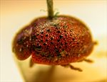
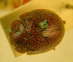
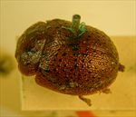
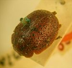
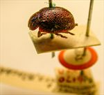
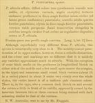

Click on images to enlarge
.jpg){kind=link}

Paropsis pustulifera type specimen, lateral view
.jpg){kind=link}

Paropsis pustulifera type specimen, dorsal view
.jpg){kind=link}

Paropsis pustulifera type specimen
.jpg){kind=link}

Paropsis pustulifera type specimen
.jpg){kind=link}

Paropsis pustulifera type specimen & labels
{kind=link}

Paropsis pustulifera, description
Name
Trachymela pustulifera (Blackburn, 1896)
Type specimen
Location: BMNH
Label data: “Type” (red-bordered circle), “6170 N.W.A.”, “Blackburn coll. 1910-236.”, “Paropsis pustulifera Blackb.”
Posterior trochanter is normal; a medium-brown species with black pustules distributed relatively evenly over elytral surface. HCE/BL ~ 19.3% (estimated from photo of lateral view)
Original description
[Original description shown in figure, translated from Latin using ChatGPT, 04/2026]
Allied to P. alticola; it differs in the entire coloration being testaceous-chestnut (except for some spots of the pronotum and the verrucae of the elytra, which are black); in the pronotum on the disc more strongly and less densely (at the sides coarsely and confluent) punctate; in the scutellum shiny, sparsely and strongly punctate; in the elytra on the disc more strongly punctate, with the verrucae very distinct (not transversely elongate), arranged in complete series, about nine, fairly closely and fairly regularly disposed; the rest as in P. alticola.
Female a little more convex than the male. Length 4 lines; width 2⅘ lines.
Notes
Blackburn (1896), deals with T. pustulifera as part of his 'subgroup iii' (i.e., those species without "strongly marked characters", whose greatest height is not or scarcely in front of the middle of the elytral margin and whose elytra are not depressed under the humeral callus). Within that group, he characterises it as:
(1) no postbasal impression on disc of elytra;
(2) elytral verrucae concolorous with or darker than general surface;
(3) puncturation of prothorax more or less close and at most moderately strong;
(4) seriate arrangement of elytral punctures and verrucae well defined;
(5) head unicolorous, elytral verrucae quite black.
This is quite clearly the same species as Ta236, even though in the only specimen I have seen, the verrucae are not arranged quite as uniformly as in the type.
References
Blackburn, T. 1896, "Revision of the genus Paropsis. Part I", Proceedings of the Linnean Society of New South Wales, vol. 21, no. 4, 637-693 (page 687).
Copyright © 2026. All rights reserved.